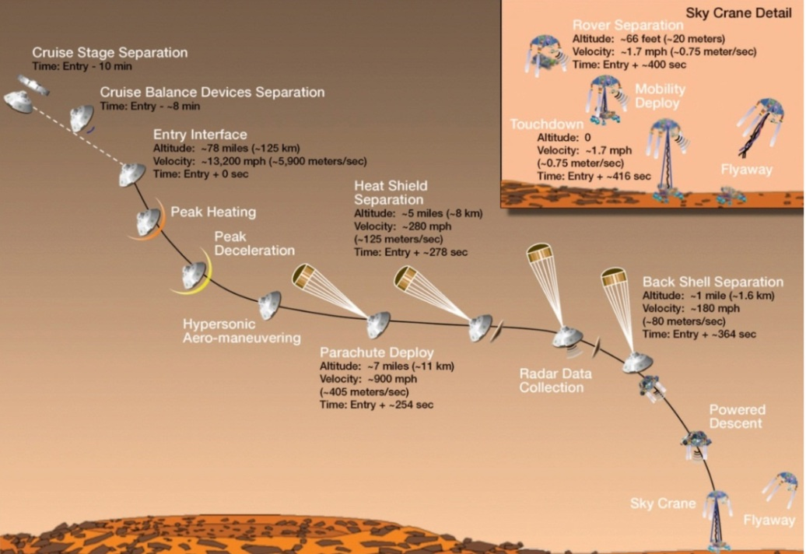
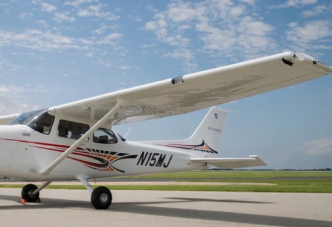
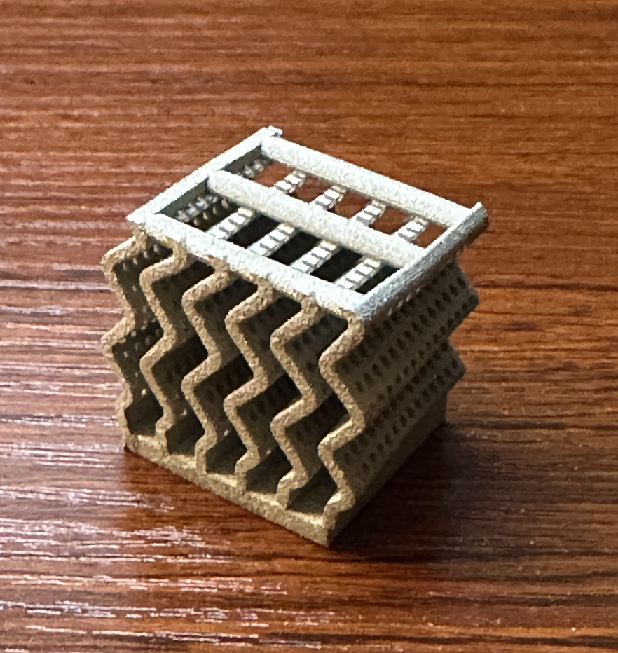
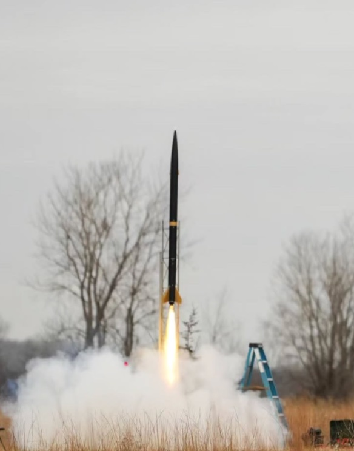
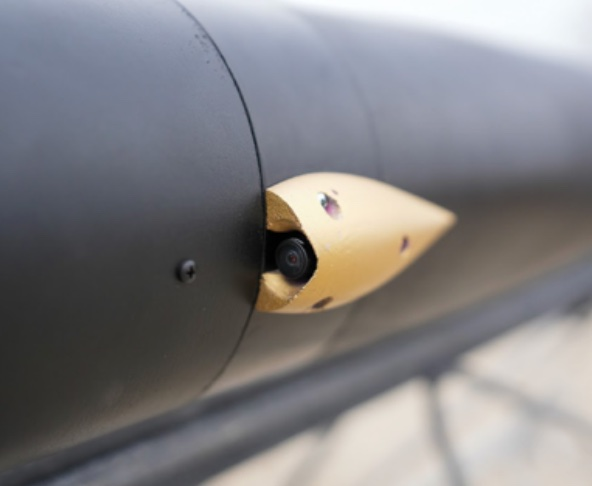
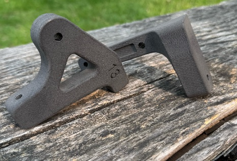
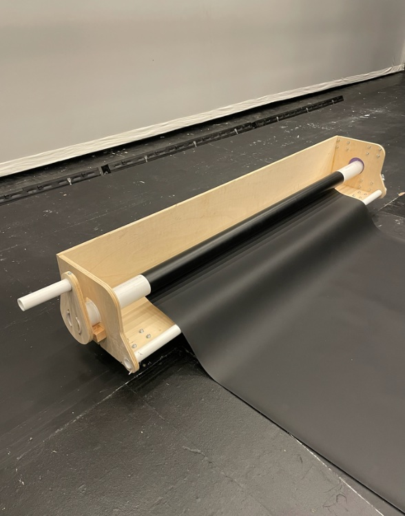
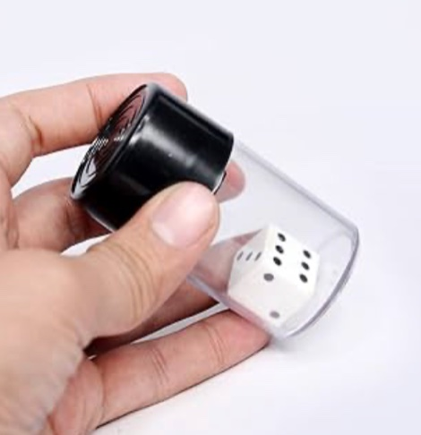

Northwestern University · Mechanical Engineering BS/MS · Aerospace Concentration
Pursuing a combined bachelor's and master's in Mechanical Engineering at Northwestern with an Aerospace Concentration. My work spans computational optimization, structural FEA, composite manufacturing, and additive manufacturing research — from Mars rover descent trajectory optimization to in-house fiberglass rocket airframes.
Engineering Work
Click any project for full details, images, and analysis.

01 — ME 441 · Computational Dynamics
Constrained nonlinear optimization of entry, descent, and landing fuel consumption across three atmospheric scenarios using COBYLA and SLSQP in Python.

02 — ME 362 · Mechanics of Materials
FEA and analytical validation of a Cessna 172 wing under aerodynamic loading — combining ANSYS with Euler-Bernoulli beam theory and the Rayleigh-Ritz method.

03 — ME 495 · Additive Manufacturing
Wavy-fin modular heat sink in 316L stainless steel, achieving a 7°C average temperature reduction over a conventional straight-fin baseline in ANSYS thermal and Fluent CFD.

04 — NUStars · NASA Student Launch
In-house manufactured fiberglass airframe and Von Karman nose cone through six vacuum-bagged layup iterations with ANSYS FEA and CFD validation.

05 — NUStars · NASA Student Launch
Aerodynamic camera housing from PDR through a competition flight in Huntsville — capturing the first visual confirmation of active drag system actuation in flight.

06 — ME 240 · Mechanical Design
Full product development cycle from needs analysis through topology-optimized FEA, Nylon 12 printing, and ISO 4210 compliance testing across two design iterations.

07 — Independent Design
Purpose-built mechanical device for rolling and storing Marley dance floor — plywood frame, PVC roller, crank mechanism, and locking caster wheel system.

08 — ME 314 · Rigid Body Dynamics
Multi-body rigid body dynamics simulation with Euler-Lagrange formulation, impact constraints via Lagrange multipliers, and Hamiltonian energy conservation in Python.
Professional Experience
2025 — Present
FAST Additive Manufacturing Lab · Northwestern
Investigating vibration-assisted wire-laser directed energy deposition of Inconel 718 to drive a columnar-to-equiaxed grain transition and reduce Laves phase formation for aerospace applications.
Summer 2024
CertainTeed Saint-Gobain
Supported manufacturing engineering projects in building materials production — process analysis, quality validation, and data-driven reporting across fabrication lines.
Jan 2026 – Present
Tackform
Contributed to product development and mechanical design for mounting hardware systems — CAD modeling, design validation, and support for manufacturing workflows.
Summer 2023 & Summer 2024
City National Bank of Florida
Performed financial analysis and client portfolio reporting; built data pipelines and dashboards using SQL and Excel to support institutional banking operations.
About
I'm pursuing a combined BS/MS in Mechanical Engineering at Northwestern University with an Aerospace Concentration. My work spans the full engineering arc — from constrained optimization in Python to composite layup in a lab, from FEA validation in ANSYS to physical testing under realistic loading conditions.
I conduct undergraduate research in Professor Tao Sun's FAST Additive Manufacturing Lab, investigating vibration-assisted wire-laser directed energy deposition of Inconel 718. Outside of research, I build rockets with NUStars and serve as Academic Affairs Coordinator for Delta Tau Delta.
CAD & Simulation
Programming
Manufacturing
Analysis Methods